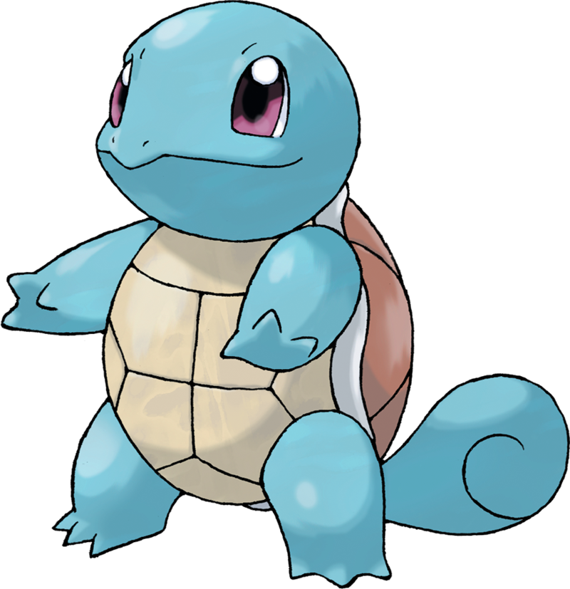
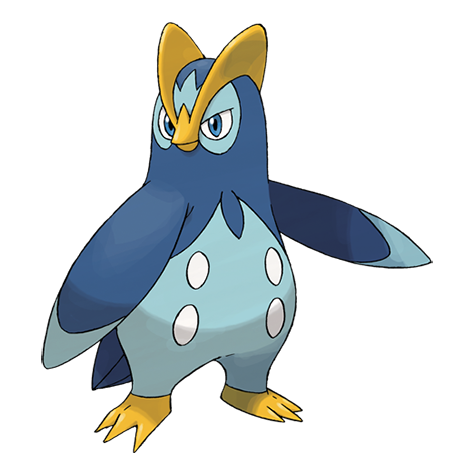
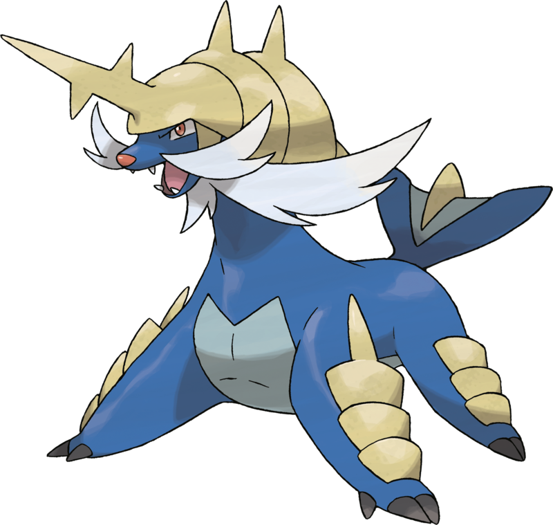

Carapuce n0007.
Quand il rentre son cou dans sa carapace, il peut projeter de l’eau à haute pression.
Carabaffe n0008.
Il est considéré comme un symbole de longévité. On reconnaît les spécimens les plus âgés à la mousse qui pousse sur leur carapace.

Tortank n0009.
Il écrase ses adversaires de tout son poids pour leur faire perdre connaissance. Il rentre dans sa carapace s’il se sent en danger.
Kaiminus n0158.
Malgré son tout petit corps, la mâchoire de Kaiminus est très puissante. Parfois, ce Pokémon mordille les gens pour jouer, sans se rendre compte que sa morsure peut gravement blesser quelqu’un.
Crocrodil n0159.
Une fois que Crocrodil a refermé sa mâchoire sur son ennemi, il est impossible de le faire lâcher prise. Ses crocs sont recourbés comme des hameçons et ne peuvent pas être retirés une fois enfoncés.
Aligatueur n0160.
Aligatueur impressionne ses ennemis en ouvrant son énorme gueule. Pendant les combats, il piétine le sol de ses puissantes pattes arrière avant de charger ses adversaires à pleine vitesse.

Gobou n0258.
La nageoire sur la tête de Gobou lui sert de radar hypersensible. Il l’utilise pour sentir les mouvements de l’eau et de l’air. Ainsi, ce Pokémon peut savoir ce qui se passe autour de lui sans avoir à se servir de ses yeux.
Flobio n0259.
Le corps de Flobio est enveloppé par un film fin et collant qui lui permet de vivre hors de l’eau. Ce Pokémon joue dans la vase sur les plages lorsque la marée est basse.
Laggron n0260.
Laggron est très fort. Tellement fort qu’il peut aisément tirer un rocher pesant plus d’une tonne. Ce Pokémon est également doté d’une vue si efficace qu’il peut même voir à travers l’eau trouble.

Tiplouf n0393.
Ce Pokémon est difficile à entraîner car il est très désobéissant et déteste qu’on lui rende service.

Prinplouf n0394.
Il vit seul, à l’écart de ses pairs. Chaque individu est convaincu d’être meilleur que les autres.

Pingoléon n0395.
Il nage aussi vite qu’un hors-bord. Le tranchant de ses ailes peut fendre un bloc de glace à la dérive.

Moustillon n0501.
Le coupillage sur son ventre lui sert non seulement à combattre, mais aussi à trancher les Baies très dures.

Mateloutre n0502.
L’apprentissage de sa technique de combat, qui utilise élégamment ses deux coupillages, est extrêmement rigoureux.

Clamiral n0503.
Il dissimule de grandes lames qu’il dégaine en un éclair des fourreaux de ses pattes antérieures.
Grenousse n0686.
Sa poitrine et son dos sécrètent une mousse qui lui permet de subir moins de dégâts en amortissant le choc des attaques.

Croâporal n0687.
Il est capable de lancer des pierres recouvertes de mousse avec une précision suffisante pour toucher une canette vide à 30 m.

Amphinobi n0688.
Il transforme des jets d’eau sous pression en redoutables shuriken. Une fois lancés, ils tournent si vite qu’ils peuvent même couper le métal.
Otaquin n0728.
À force de s’entraîner quotidiennement, les ballons qu’il gonfle avec son nez grossissent de jour en jour.
Otarlette n0729.
Il est tout excité quand il est témoin d’une danse qu’il ne connaît pas. Il s’entraîne alors comme un forcené jusqu’à la maîtriser à la perfection.
Oratoria n0730.
Pour lui, le combat est une performance artistique. Il chante et danse de toute son âme pour abattre ses proies.
Larméléon n0816.
Quand il a peur, il pleure des larmes contenant une substance lacrymogène d’une puissance équivalente à celle de cent oignons.

Arrozard n0817.
Il crée des bombes à eau grâce au liquide qu’il sécrète avec la paume de ses mains. Il s’en sert dans les combats où la stratégie prime.

Lézargus n0819.
Il a plus d’un tour dans son sac : il peut tirer des gerbes d’eau du bout de ses doigts et planer dans les airs grâce à ses membranes dorsales.
Coiffeton n0912.
Originaire d’une contrée lointaine, il est venu s’installer dans la région il y a longtemps. Ses ailes sécrètent un gel qui repousse l’eau et les saletés.
Canarbello n0913.
Ils courent dans les hauts-fonds pour renforcer les muscles de leurs pattes et rivalisent entre eux pour voir qui a le coup de pied le plus élégant.
Palmaval n0914.
Il peut propulser un camion dans les airs d’un simple coup de pied. Ses puissantes pattes lui permettent aussi d’exécuter des danses insolites.